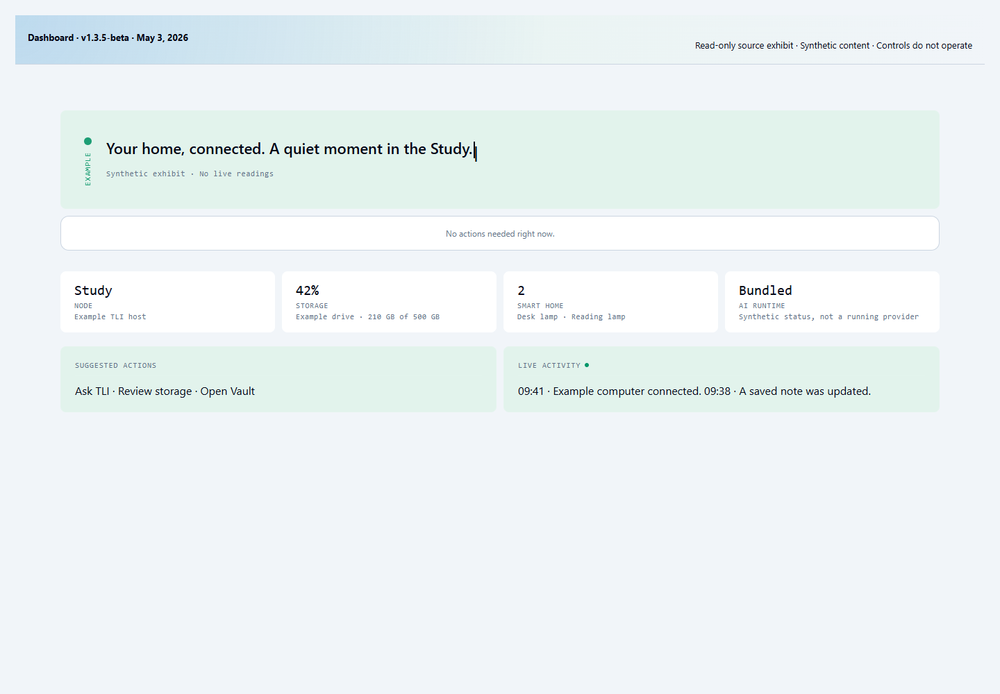
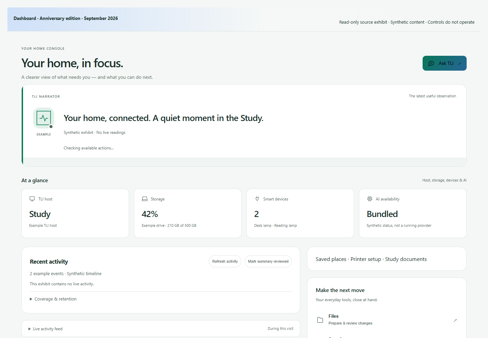
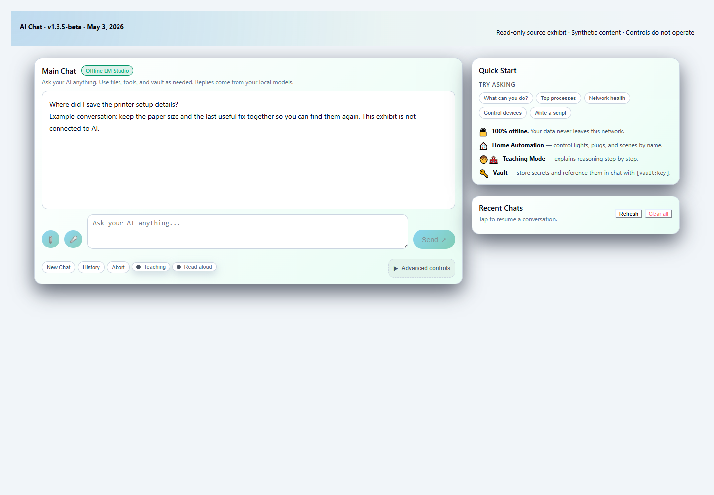
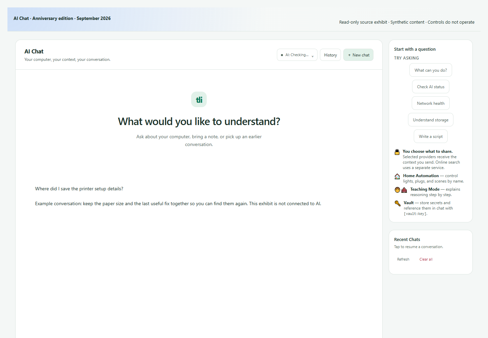
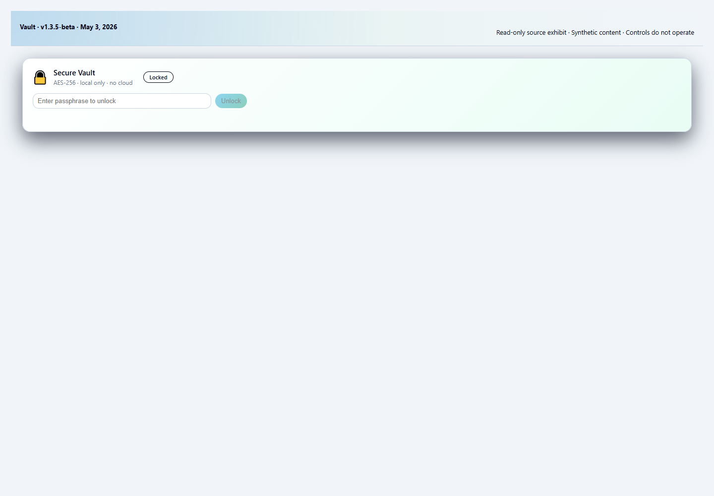
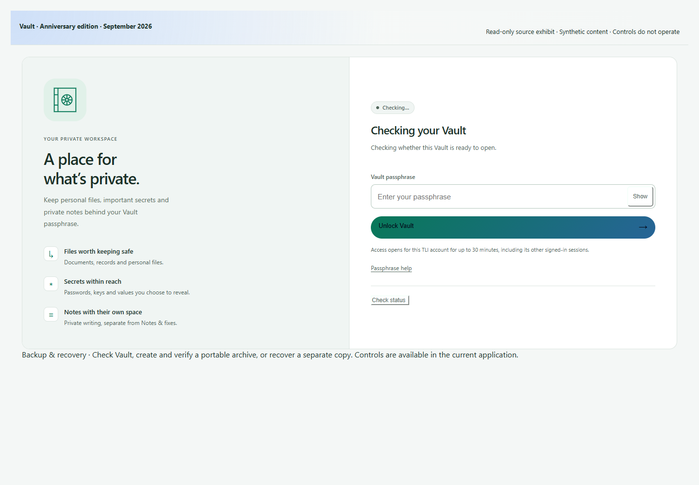
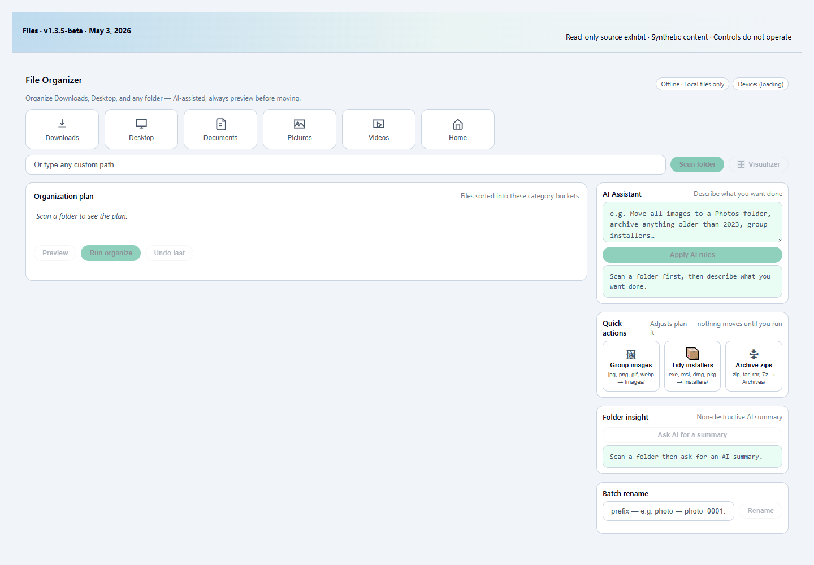
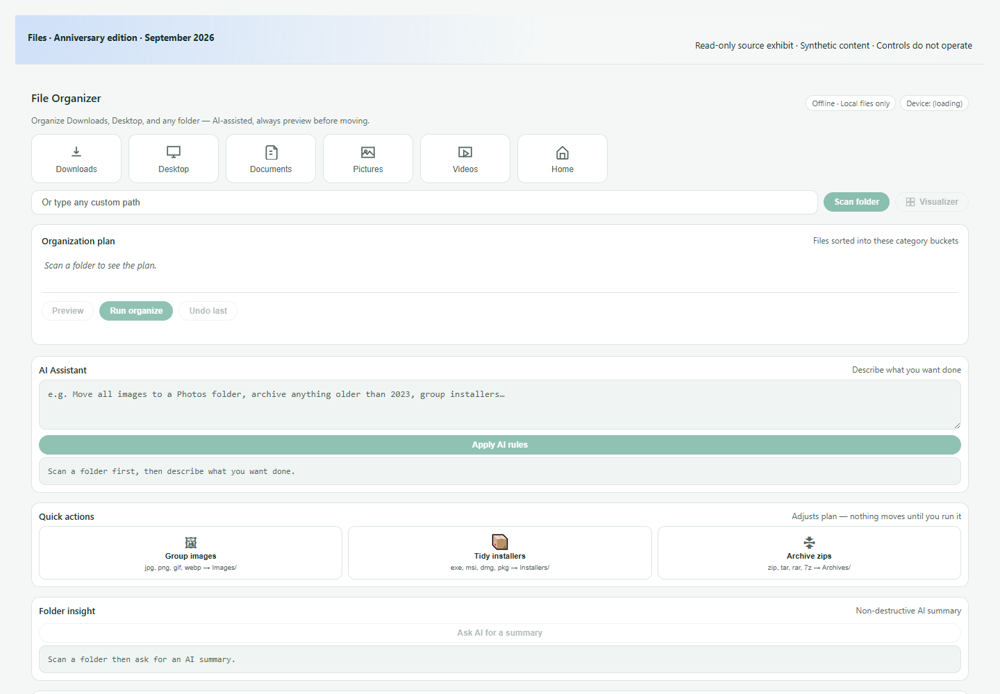
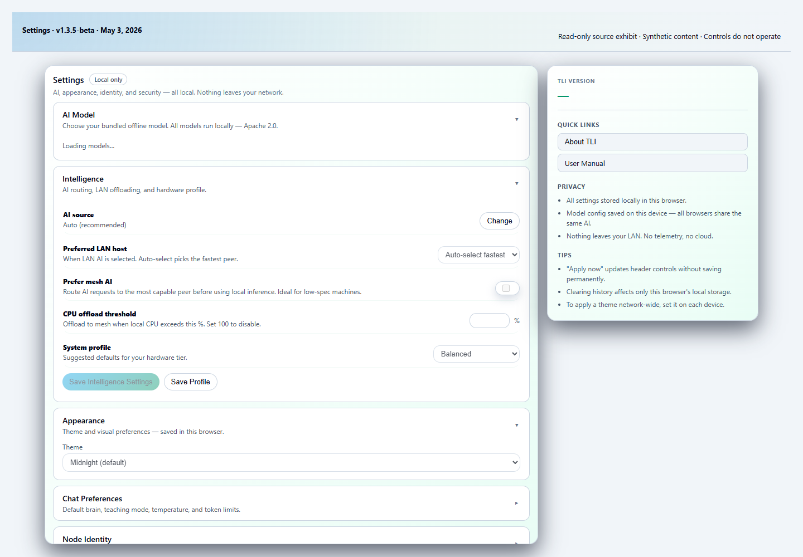
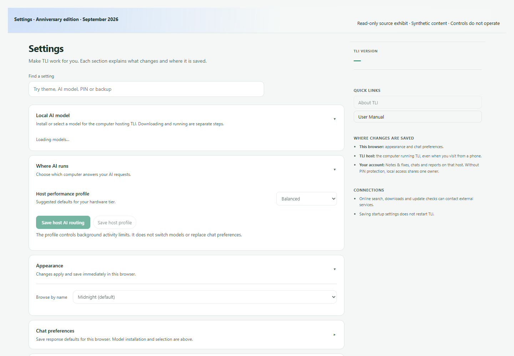

A familiar home.
A year of growing.
From the first retained interface to today’s home console. The purpose stays the same: understand your computers, keep useful things close and choose what happens next.
01Dashboard
From status tiles to attention, useful actions and the story behind a reading.


02AI Chat
A clearer conversation, deliberate context and honest response states.


03Vault
The oldest part of TLI, with a clearer boundary around private content.


04Files
Choose a folder, prepare changes, review them and understand the result.


05Settings
Choices organized around the browser, your account and the TLI host.

